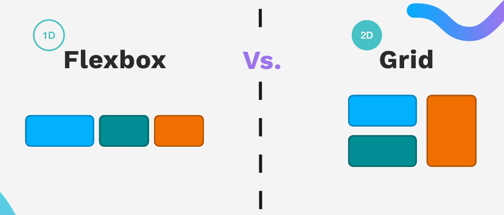
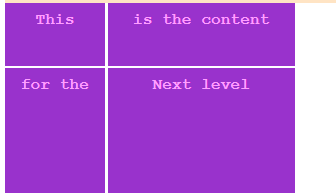
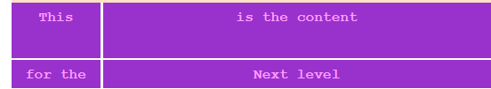
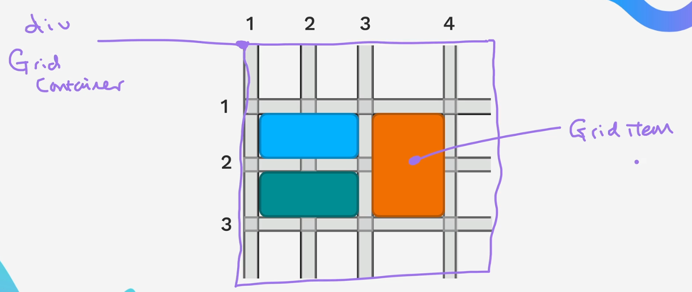
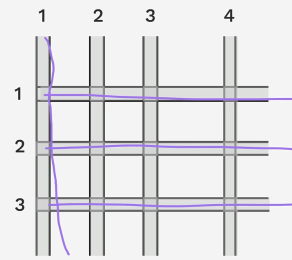

Grid Box
Introduction
Grid is another useful Html layout with css. Just like flexbox, it makes arrangement of html much easier to use.
It gives use capacity to layout out html elements in "2D" i.e along the row and column of the grid
In general flexbox is good for 1D and grid in 2D

Do I have to Choose?
The truth is you will mostly use a combination of the while working on a project.

Flexbox Example
.grid-box{
display: grid;
/* repeat(number_of_repeats, value_to_repeat) - Repeat value a number of times*/
/* minmax(min_value, max_value) - Value ranging between min and max*/
grid-template-columns: repeat(auto-fill, minmax(80px,1fr));
grid-auto-rows: 50px;
gap: 2px;
}
<section class="grid-box">
<div>This</div>
<div>is the content</div>
<div>for the </div>
<div>Next level</div>
<div>of grid </div>
...
...
</section>
Grid Sizing
Fixed Sized Grid
This involves setting a fixed size on grid. It is not responsive.
.grid-box{
display: grid;
grid-template-rows: 50px 100px;
grid-template-columns: 80px 150px;
gap: 2px;
}

Note
You can write a short-hand form of the grid-template-row and grid-template-column like this
Auto for Sizing
It gives your element room to fill up the width.
.grid-box{
display: grid;
grid-template-rows: 50px auto;
grid-template-columns: 80px auto;
gap: 2px;
}

Note
When you do auto for grid-template-columns it tries to fill the width of parent.
However, for grid-template-rows it tries to fit to content
Ratio for Sizing
This is done by using fr to qualify the ratio you want
Most of the time, this is what you will probably want to use.
using minmax()
This you basically create a minium and maximum stop dimension especially in the column when shrinking or expanding.
.grid-box{
display: grid;
grid-template-rows: 2fr 1fr;
grid-template-columns: 1fr minmax(50px, 300px);
gap: 2px;
}
using repeat()
Instead of writing all the row or column individual dimension, repeat helps repeat the value
.grid-box{
display: grid;
grid-template-rows: 2fr 1fr;
grid-template-columns: repeat(7, 100px);
gap: 2px;
}
Grid Auto rows and columns
If you create an html group that does not later fit into your dimension set by
grid-template you can add grid-auto-rows or grid-auto-columns to give them
a default value
Grid Placement
The containing html element is the grid container and the children html elements are the grid items

Grid rows and columms

Grid lines 
Grid overlapping
Here is the grid container css for the overlapping grids